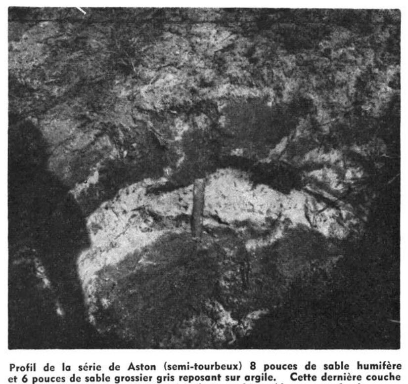

Identification & Caractéristiques Générales
La série Blanche s'est développée sur des dépôts meubles quaternaires caractérisés par un placage superficiel de texture fine à modérément fine, constitué de loam sableux à loam sableux fin, reposant sur un substratum subordonné de nature sableuse, meuble ou à composante squelettique. Ces formations de surface occupent des paysages de plaines ou de terrasses aux microreliefs façonnés par des modelés de sédimentation plane ou de faible pente n'excédant généralement pas 2,5 %. Ce contexte géomorphologique favorise une redistribution latérale restreinte des eaux de ruissellement et une accumulation locale de sédiments fins sus-jacents au matériau originel grossier.
Sur le plan morphologique, le profil pédologique présente un drainage naturel qualifié d'intermédiaire, la nappe phréatique temporaire exerçant une influence marquée sur la dynamique hydrique du sol sans toutefois induire des conditions d'hydromorphie permanente extrêmes. La fraction supérieure manifeste une accumulation importante de matière organique conférant un niveau très élevé à cet horizon, tandis que l'acidité active y est prononcée. Les processus de brunification sont restreints ou absents, et l'expression des horizons sous-jacents de type B (Bm ou Bf) demeure limitée, mince et discontinue comparativement aux séries pédologiques associées.
D'un point de vue agronomique, les sols de la série Blanche présentent des aptitudes modérées pour la production agricole, principalement exploitées pour les cultures fourragères et les grandes cultures adaptées aux conditions locales. Les principales limitations découlent de la texture hétérogène du profil, combinant un épisumum meuble et un substratum plus grossier, ainsi que de l'acidité élevée exigeant des apports réguliers de amendements calciques ou magnésiens. L'installation d'un réseau de drainage souterrain et l'ajustement des pratiques de travail du sol sont généralement requis pour optimiser la portance, réguler le régime hydrique et assurer la durabilité des rendements culturaux.
Classification Taxonomique & Environnement Pédologique
| Ordre Pédologique | Luvisolique |
|---|---|
| Grand Groupe (SCSS) | Luvisol gris |
| Sous-Groupe Taxonomique | Luvisol gris luvisolique |
| Famille Pédologique | Sableuse, mixte sableux, neutre |
| Mode de Dépôt Parental | Fluviatile sur glacio-lacustre |
| Classe de Drainage Naturel | Modérément bien drainé |
| Régime Thermique & Humidité | Frais / Humide |
Description Morphologique du Profil Type
Séquence génétique des horizons pédologiques caractérisant le profil type représentatif de la série Blanche :
Profil forestier / boisé — Étude pédologique des sols défri
✓ Source : Étude pédologique des sols défri — Page 66Couleur Munsell : 10YR 3/2.5, 10YR 6/2
Structure & Consistance : Polyédrique à granulaire
Description morphologique : Loam sableux; brun gris très foncé à brun foncé (10 YR 3/2.5 h), gris brun clair (10 YR 6/2 s); particulaire; meuble; racines abondantes, microracines, très fines, fines, moyennes, verticales; très poreux; limite nette, ondulée; épaisseur de 20 à 26 cm; moyennement acide.
Couleur Munsell : 10YR 4/6 (matrice), 10YR 6.5/3 (marbrures)
Structure & Consistance : Polyédrique à granulaire
Description morphologique : Loam sableux; brun jaune foncé (10 YR 4/6 h); brun pâle à brun très pâle (10 YR 6.5/3 s); marbrures rares; particulaire; meuble; racines peu abondantes, microracines, très fines, verticales; très poreux; limite abrupte, interrompue; épaisseur de 0 à 11 cm; moyennement acide.
Couleur Munsell : 2.5Y 6/2 (matrice), 2.5Y 5/4 (marbrures)
Structure & Consistance : Polyédrique à granulaire
Description morphologique : Argile limoneuse; gris brun clair (2.5 Y 6/2 h), brun olive clair (2.5 Y 5/4 s); marbrures rares; massive; ferme; racines très peu abondantes, microracines, très fines, verticales; peu poreux; limite graduelle, ondulée; épaisseur de 14 à 17 cm; moyennement acide.
Couleur Munsell : 2.5Y 4.5/4 (matrice), 10YR 7/1 (marbrures)
Structure & Consistance : Polyédrique à granulaire
Description morphologique : Argile lourde; brun olive clair à brun olive (2.5 Y 4.5/4 h), gris clair (10 YR 7/1 s); marbrures rares; polyédrique subangulaire, fine à moyenne, modérée à forte; enrobements argileux, sur la face des agrégats non spécifiés, continus; très poreux; limite graduelle, ondulée; épaisseur de 38 à 40 cm; faiblement acide.
Couleur Munsell : 5Y 5/3 (matrice), 5Y 5/2 (marbrures)
Structure & Consistance : Polyédrique à granulaire
Description morphologique : Argile lourde; olive (5 Y 5/3 h); gris olive (5 Y 5/2 s); marbrures nombreuses, petites, distinctes, brun olive clair (2.5 Y 5/6 h); polyédrique subangulaire, fine à moyenne, modérée à forte; assez poreux; neutre.
Profils Photographiques & Planches de Terrain
Documents iconographiques, figures pédologiques et coupes de terrain documentées dans les mémoires d'inventaire pour de la série Blanche :

Propriétés Physico-Chimiques & Analyses de Laboratoire
| Horizon | Prof. (pces/cm) | Sable % | Limon % | Argile % | pH | C % | N % | Ca éch. | Mg éch. | K éch. | H+ éch. | Bases tot. | C.E.C. (meq/100g) | Saturation % | ||||||||
|---|---|---|---|---|---|---|---|---|---|---|---|---|---|---|---|---|---|---|---|---|---|---|
| Ahp | 0-21 | 60,0 | 22,0 | 18,0 | - | 6,06 | 5,61 | 8,84 | 3,79 | 0,24 | 0,20 | 5,56 | 0,68 | 0,04 | 0,07 | 7,76 | 14,11 | 44,98 | 51,5 | 901 | 8,17 | 0,2 |
| Bf | 21-30 | 79,0 | 8,0 | 13,0 | - | 5,98 | 5,34 | 9,45 | 1,75 | 0,35 | 0,32 | 2,39 | 0,97 | 0,02 | 0,08 | 9,44 | 12,90 | 26,83 | 89,6 | 1247 | 2,46 | 0,1 |
| IIA'egj | 30-45 | 8,0 | 44,0 | 48,0 | - | 6,07 | 4,78 | 8,11 | 0,59 | 0,12 | 0,12 | 4,62 | 5,68 | 0,12 | 0,28 | 9,60 | 20,30 | 52,70 | 91,8 | 866 | 0,81 | 0,5 |
| IIBtgj | 45-85 | 1,0 | 25,0 | 74,0 | - | 6,41 | 5,33 | 7,87 | 0,44 | 0,07 | 0,05 | 8,73 | 12,55 | 0,29 | 0,46 | 8,00 | 30,03 | 73,35 | 268,8 | 1178 | 0,69 | 0,9 |
| IICg | 85+ | 1,0 | 24,0 | 75,0 | - | 6,64 | 6,40 | 7,99 | 0,20 | 0,03 | 0,02 | 8,32 | 12,50 | 0,43 | 0,53 | 6,08 | 27,86 | 78,17 | 297,6 | 1247 | 0,66 | 1,5 |
Particularités Régionales, Phases & Variantes Pédologiques
Déclinaisons régionales, faciès texturaux, phases d'érosion ou de pierrosité et variantes cartographiées par étude pour de la série Blanche :
| Étude Régionale | Symbole | Appellation / Phase / Variante | Différenciation avec la série type (Analyse pédologique) |
|---|---|---|---|
| Étude pédologique des sols défrichés de l’Abitibi-Témiscamingue | Bc |
Blanche loam sableux | Modalité modale de référence (type de base de la série). |
Bc-g |
Blanche à texture graveleuse | Faciès textural de surface gravier (distinct du loam sableux de référence). | |
Bc-l |
Blanche à texture loameuse | Faciès loameux plus fin et équilibré que le loam sableux de référence (meilleure rétention en eau et nutriments). |
Distribution Pédo-Paysagère & Représentativité Cartographique (Couverture PPS 2026)
- Apika sable (APK) — co-occurrente dans 26 polygone(s)
- Baby loam limoneux à loam limoneux argileux (BAB) — co-occurrente dans 20 polygone(s)
- Béarn argile lourde (BEA) — co-occurrente dans 9 polygone(s)
Aptitudes Agronomiques, Hydropédologie & Conservation des Sols
Indicateurs Hydropédologiques & Vulnérabilité à l'Érosion (BDHP 2026)
Interprétation BDHP : Potentiel de ruissellement modérément élevé. Faible taux d'infiltration, présence d'horizons ralentissant le drainage descendant.
Classement selon l'Inventaire des Terres du Canada (ITC / CLI) : Classe 3m.
- Potentiel agricole : Terroir adapté aux cultures régionales selon la texture dominante et la régie de drainage.
- Contraintes majeures : Modérément bien drainé. Risque d'engorgement temporaire ou d'excès d'eau printanier.
- Gestion & Aménagement : Drainage souterrain ou superficiel préconisé sur les terres planes. Chaulage et apport organique régulier selon les bilans agronomiques.
- Cultures adaptées : Grandes cultures (maïs, soya, céréales), prairies fourragères et cultures maraîchères selon le contexte géomorphologique.